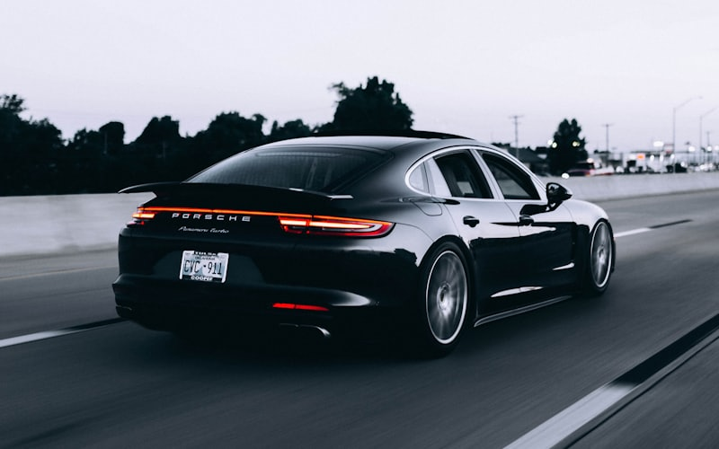

Custom Slider
Dependency-free scroll-snap slider. Try this page with JavaScript disabled — every variation remains a readable, swipeable strip.
Hero banner
How this variant is built — and what it fixes
The pattern 68 of 76 DealerOn OEM demo sites lead with, rebuilt on data-fade: one slide per view, whole-slide link, 5 s rotation (the estate's own
data-interval="5000"), dots. Slides stack in a single CSS grid cell, so the tallest defines the box and CLS stays 0 — no absolute positioning, no collapsed height. Alt text is
empty because the link's aria-label already names the destination; a decorative banner photo announced twice is noise.
The platform's own hero has four accessibility problems this one does not. That is the point of the section:
| Platform hero (68 sites) | This one |
|---|---|
Pause button renders at 16 × 6 px, id hiddenPlayPauseControl |
36 × 36 by default — over the WCAG 2.5.8 (AA) 24 × 24 minimum, and first in tab order |
Dots are <li role="button" tabindex="0"> |
Real <button> elements, one per slide |
aria-live="off" on the track |
Terse .dl-carousel-status region, silent while rotating |
No prefers-reduced-motion handling observed |
Never starts rotating under reduced motion; crossfade transition removed too |
Findings from docs/research/2026-08-18-oem-demo-slider-census.md — all 76 demo homepages fingerprinted, the hero behaviour verified live in a browser rather than inferred from
markup.
Featured vehicles
Copy-paste HTML + options
<div class="dl-carousel" data-slider aria-label="Featured vehicles">
<ul class="dl-carousel-track">
<li class="dl-carousel-slide">…card content…</li>
<!-- more slides -->
</ul>
</div>
Card images need width/height (that is what holds CLS at 0) and, on a real site, srcset/sizes — size sizes to ONE slide's
rendered width, never 100vw. The six photos on this page are single full-size JPEGs, which is why the demo weighs ~1.8 MB; a responsive set is the single biggest
performance win when you implement.
The whole card is clickable via a stretched link: the card's "View details" <a> carries an ::after overlay. Watch the containing block — here the link sits
inside the absolutely-positioned card body, so the overlay's top offset overshoots (inset: -999px 0 0) and the card's overflow: hidden trims the hit area to the
card box. Keep the link's aria-label short — it is the card's accessible name.
Set slides-per-view in CSS (no JS breakpoints):
.my-slider { --dlc-per-view: 1; }
@media (min-width: 640px) { .my-slider { --dlc-per-view: 2; } }
@media (min-width: 1024px) { .my-slider { --dlc-per-view: 3; } }| Attribute | Default | Effect |
|---|---|---|
data-slider |
— | Auto-initialize this element |
data-autoplay="4000" |
0 (off) | Advance every N ms; adds a pause button |
data-rewind="false" |
rewind on | Stop at the ends instead of wrapping; end arrows disable |
data-step="slide" |
page | Arrows/autoplay advance one card at a time (see the model bar) |
data-drag="false" |
drag on | Opt out of mouse drag-to-scroll (touch swiping is native either way) |
data-gallery |
off | Thumbnail-gallery (tabbed) variant |
data-roledescription="…" |
carousel | Screen-reader role description; empty string to omit |
Explore Chevrolet Models
How this variant is built
Stock dl-carousel — every visual difference is site CSS: bare arrows repositioned into the gutters (--dlc-arrow-bg: transparent), portrait overlay cards, and the
dots restyled into a bar with a sliding thumb: the page script at the end of this file watches the library's current-dot class and sets --bar-index/--bar-count,
which a ::before translates across — the "custom callback" escape hatch in action. data-rewind="false" stops the carousel at the ends (the arrow disables) instead
of wrapping.
Alt text on a real site: these photos are stand-ins, so they carry alt="" and the heading names the card. With real OEM photography, give the image a
descriptive alt (alt="2026 Chevrolet Silverado 1500 LT in Summit White") for image search, and put an explicit aria-label="Explore the Silverado" on
the wrapping link so its accessible name stays short instead of concatenating the alt text and the heading.
Faded peek
How this variant is built
Two stock knobs and one mask: --dlc-peek (engine CSS — pads the track and shifts the snap points so a sliver of each neighbor stays visible) plus a
mask-image gradient on the track whose fade width equals the peek. No page script, no engine changes, safe under reduced motion.
Mixed image sizes
The recipe (why nothing here breaks)
Every card image gets aspect-ratio: 4 / 3; inline-size: 100%; object-fit: cover; — the box is fixed, the source fills it, and any upload dimensions render identically. Keep
real width/height attributes (CLS stays 0) and prefer uniform assets anyway: cover-cropping costs edges, and consistent art always looks better than rescued art.
Use object-fit: contain instead for cutouts and logos.
Service cards
How this variant is built
The model-bar mechanics with full content cards — a rebuild of the Lead Science practice-area carousel (whole card is the link, data-step="slide" one-card advance, arrows
only). The image sits in a fixed-aspect cover box (any upload dimensions fit), and the cards stay equal height for free: the track is already flex, so slides stretch, and
flex-grow on the copy pushes every "Read more" to the same baseline. The "Read more" line is aria-hidden decoration, and the card's accessible name is simply its
visible text — no aria-label at all. An earlier version put a short one here ("Learn about the service center") and that was a WCAG 2.5.3 failure (Label in
Name, Level A): the accessible name has to contain the visible text so a speech-input user saying what they can see gets a match. Because the body copy sits inside the link, no
short label can ever contain it — the fix is to drop the label, not reword it. A short aria-label is only safe where the visible text is just a heading, as on the model-bar
cards ("Explore the Silverado 1500" contains "Silverado 1500"). Lighthouse's label-content-name-mismatch audit catches this, and it carries no weight in the score — the
category reads 100 with the failure still present.
Video testimonials
How this variant is built
Rebuild of the video-testimonial scroller pattern: one slide per view, poster + play button left, name and tagline right. The video never plays inline — both the poster and "Click
to watch" open the native <dialog> at the end of this page (page script; Esc and backdrop-click close for free). The dialog ships a placeholder frame — on a real site
holds a real youtube-nocookie <iframe> whose src is set on open and removed on the dialog's close event — that is
the whole stop-on-close recipe. There is no cross-origin pause API without loading the vendor's player SDK, so clearing src is the reliable stop, and listening for
close (rather than the close button's click) is what makes Esc and backdrop-click stop the audio too. No autoplay on the carousel itself: the reference site rotates video
cards every 3 seconds, which fights the content.
Photo gallery
Copy-paste HTML + options
<div class="dl-carousel" data-slider data-gallery aria-label="Vehicle photos">
<div class="dl-carousel-track">
<div class="dl-carousel-slide"><img src="…" width="1200" height="750" alt="Describe the photo"></div>
<!-- more photos; use divs (slides become tabpanels), not ul/li -->
</div>
</div>
Thumbnails are generated from each slide's image; the image
alt names the thumbnail tab. Real photos should also carry srcset/sizes — size sizes to ONE slide's rendered width, never
100vw.
Customer reviews
Copy-paste HTML + options
<div class="dl-carousel" data-slider data-autoplay="5000" aria-label="Customer reviews">
<ul class="dl-carousel-track">
<li class="dl-carousel-slide">…review…</li>
</ul>
</div>
Autoplay pauses on hover, stops permanently on keyboard focus or drag (the pause button restarts it), never starts under
prefers-reduced-motion, and rewinds at the end — no cloned slides.
Stock look — the base
Everything above is site CSS over this. Untouched engine defaults: overlaid dark arrows, per-page dots in reserved space (CLS 0), snap scrolling.
Copy-paste HTML — the base for every variation
<link rel="stylesheet" href="dl-carousel.css">
<script src="dl-carousel.js" defer></script>
<div class="dl-carousel my-slider" data-slider aria-label="Describe the strip">
<ul class="dl-carousel-track">
<li class="dl-carousel-slide">…card content…</li>
</ul>
</div>